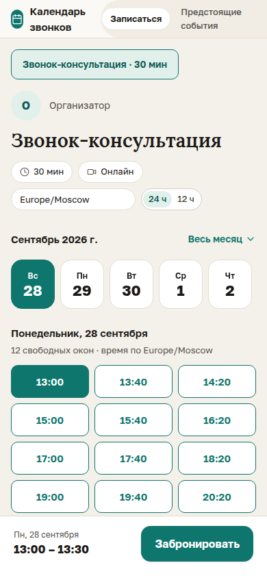

Г3
Гость
Выбрать день
Задача: Сразу увидеть все дни, когда можно записаться, и выбрать удобный.
Макеты: A2 · B2 · C1
/book/:slug
КАК СЕЙЧАС
 12
Десктоп: месячная сетка
Телефон: лента дат
12
Десктоп: месячная сетка
Телефон: лента дат
12
3
ЧТО МЕНЯЕМ И ПОЧЕМУ
1
Две недели сеткой вместо календаря на месяц
Почему: Окно записи — 14 дней, и оно почти всегда переходит через конец месяца. В сентябре сейчас видно 3 дня, а 9 остальных спрятаны за стрелкой, и кажется, что свободного времени мало.
новый two-week-grid.tsx вместо month-calendar.tsx на /book
2
Под датой подписывать число свободных окон
Почему: День выбирают по наличию времени. Без подписи гость кликает по дням наугад и возвращается назад.
two-week-grid.tsx, pluralRu()
3
Исправить дни недели в ленте на телефоне
Почему: Сейчас 28 сентября подписано «Вс», хотя это понедельник. Причина: parseDateKey() создаёт локальную полночь, а форматируется она в UTC. Так легко записаться не на тот день.
date-strip.tsx, тест на 2026-09-28 → «Пн»
4
Выходные показывать, но неактивными, с подписью «выходной»
Почему: Пропуск в ряду дат объясняет сам себя. Иначе исчезнувшие дни выглядят как сбой.
two-week-grid.tsx
5
На десктопе добавить переключатель «Дни / Неделя»
Почему: Одним удобнее выбрать день, а потом время (A), другим — сравнить неделю целиком (B). Выбор запоминается на устройстве.
home-page.tsx, новый week-grid.tsx